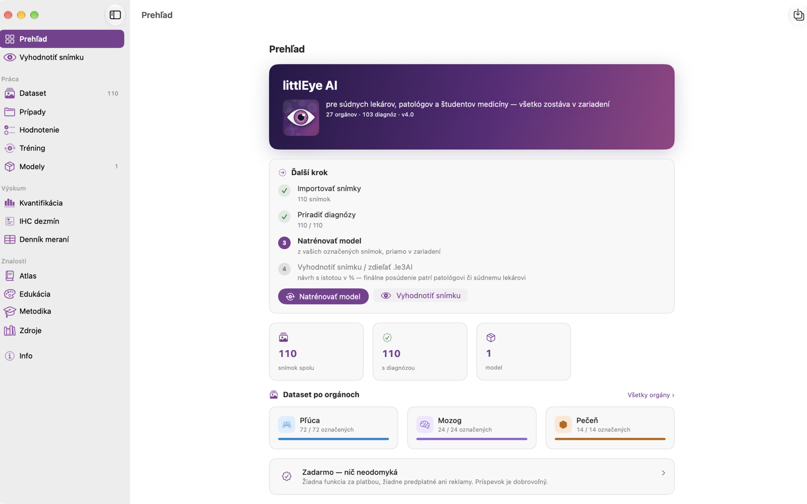
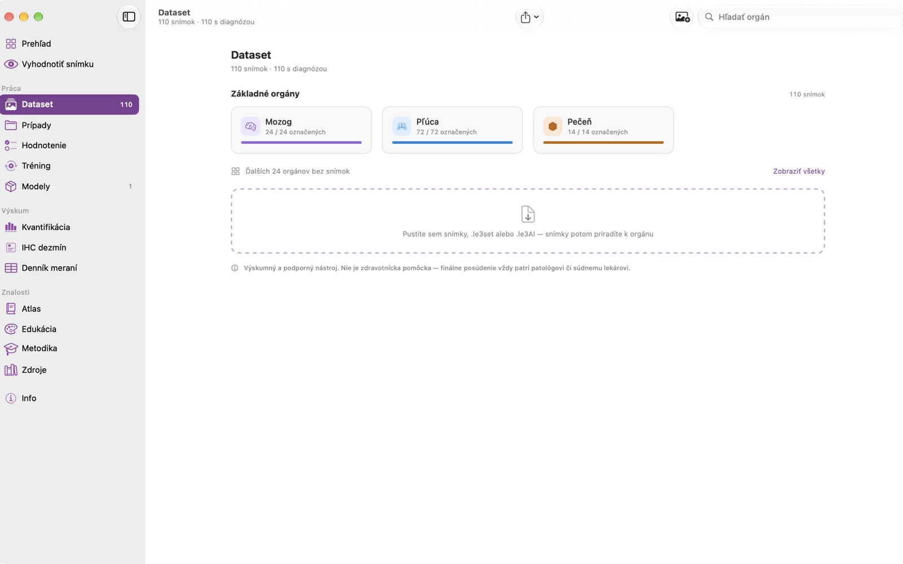
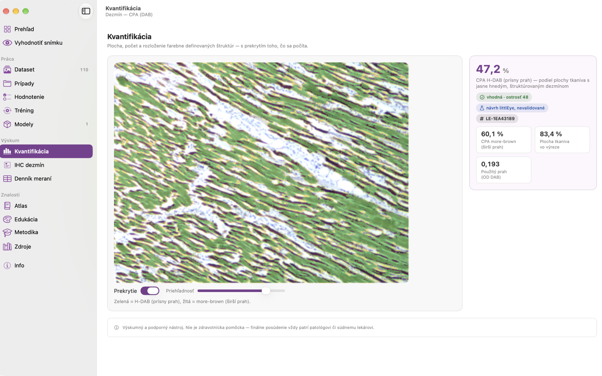
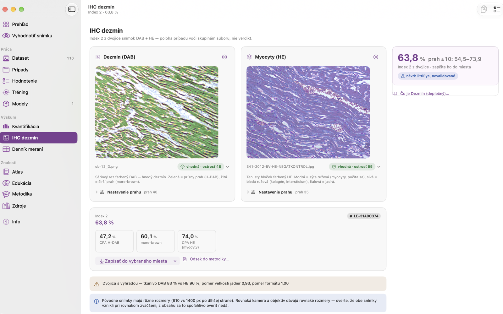
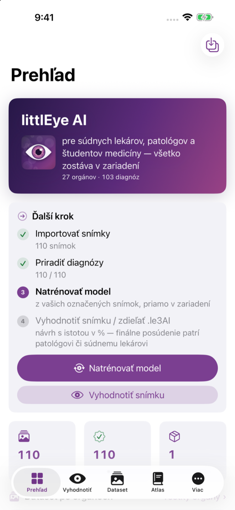
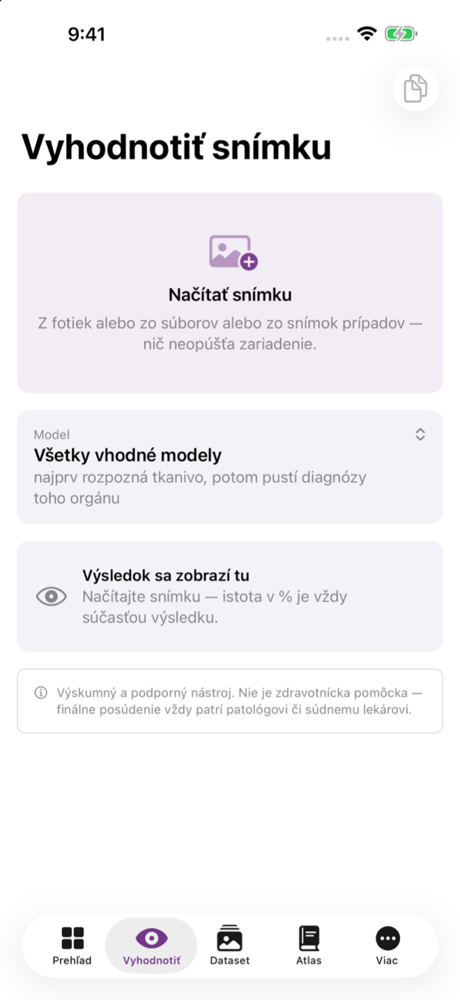

Čo je nové v 4.0
What is new in 4.0
Myšlienka appky sa nemení: mení sa obal, poradie a jednotnosť. Vzhľad profesionálneho nástroja: jeden bočný panel, jedna šírka stránky, karty s vláskovým rámom, jedno primárne tlačidlo na obrazovku.
The idea of the app does not change: the wrapping, the order and the consistency do. The look of a professional tool: one sidebar, one page width, hairline-framed cards, one primary button per screen.
Nová navigácia
New navigation
Bočný panel má na Macu 15 riadkov v poradí práce: Prehľad a Vyhodnotiť snímku, potom Práca, Výskum, Znalosti a Info. Skratky ⌘1–⌘0 ostávajú ako v 3.4.
On the Mac the sidebar has 15 rows in the order of work: Overview and Evaluate image, then Work, Research, Knowledge and About. The ⌘1–⌘0 shortcuts stay as in 3.4.
Dataset
27 orgánov v jednej mriežke po sústavách namiesto 27 riadkov panela. Snímky aj .le3set pustíte priamo do orgánu; pred exportom vidíte, čo sa zdieľa.
27 organs in one grid by body system instead of 27 sidebar rows. Drop images or a .le3set straight onto the organ; before export you see what gets shared.
Prístrojový panel
Instrument panel
Kvantifikácia obrazu a IHC dezmín: snímka s prekrytím vľavo, hlavná hodnota s intervalom a kontrolným súčtom vpravo, nastavenie až pod tým. Výsledok je vždy pri snímke.
Image quantification and desmin IHC: the image with its overlay on the left, the main value with an interval and the settings checksum on the right, settings below. The result always sits next to the image.
Dvojica DAB + HE jedinou cestou
The DAB + H&E pair, one path
Z Kvantifikácie vedie do dezmínu snímka, nie čísla. Index 2 sa prepočíta hneď po každej zmene, bez tlačidla Vyhodnotiť a bez zastaraného výsledku.
From Quantification the image travels to desmin, not numbers. Index 2 is recomputed after every change, no Evaluate button, no stale result.
Rýchlejší merací motor
Faster measurement engine
Dekódovanie a raster mimo hlavného vlákna, analýza zrušiteľná pri ťahaní posuvníka, analýza citlivosti bez opakovaného kreslenia prekrytia. Vzorce a kontrolné súčty sa nemenia.
Decoding and rasterising off the main thread, an analysis that cancels while you drag the slider, sensitivity analysis without redrawing the overlay. Formulas and checksums are unchanged.
Záloha s obnovou
Backup with restore
Úplná záloha (register, snímky, modely, denník, šarže) a obnova zo zálohy, v Nastaveniach, aj na iPade.
A complete backup (register, images, models, log, batches) and restore from backup, in Settings, on the iPad too.
Prehľad s „Ďalším krokom“
Overview with a “Next step”
Jedna karta vedie od importu snímok cez diagnózy a hodnotenie kolegami k tréningu, vyhodnoteniu a exportu .le3AI. Prosby o podporu už nevisia nad pracovnými sekciami.
One card leads from importing images through diagnoses and colleague review to training, evaluation and the .le3AI export. Support reminders no longer hang over the work sections.
iPhone so záložkami
iPhone with tabs
Prehľad · Vyhodnotiť · Dataset · Atlas · Viac: každá záložka s vlastným zásobníkom, bez tlačidla Späť na Prehľade. Nastavenia sú na iPhone a iPade v navigácii.
Overview · Evaluate · Dataset · Atlas · More: each tab with its own stack, no Back button on the Overview. Settings are in the navigation on iPhone and iPad.
Tmavý režim
Dark mode
Každá farba má svetlý aj tmavý variant, jediný značkový gradient pochádza z ikony. Farby 27 orgánov sú čitateľné ako text v oboch režimoch.
Every colour has a light and a dark variant, the single brand gradient comes from the icon. The colours of the 27 organs are legible as text in both modes.
Prístupnosť
Accessibility
Kontrast textu ≥ 4,5:1, Dynamic Type, VoiceOver popisy grafov a posuvníkov, čísla a dátumy podľa jazyka. Farba nikdy nie je jediný nositeľ významu.
Text contrast ≥ 4.5:1, Dynamic Type, VoiceOver descriptions of charts and sliders, numbers and dates following the language. Colour is never the only carrier of meaning.
Z verzií 3.3 a 3.4
From 3.3 and 3.4
Nástroje pre štúdiu a publikáciu: Otsu, polia, bodové sčítanie, Macenko, kontrola kvality, analýza citlivosti, ICC a Bland–Altman, odsek do metodiky. Podrobnosti ›
Study and publication tools: Otsu, fields, point counting, Macenko, quality control, sensitivity analysis, ICC and Bland–Altman, a Methods paragraph. Details ›
Snímky
Screenshots






Ako to funguje
How it works
- ImportovaťImportSnímky HE preparátov (JPEG, PNG, TIFF, HEIC) zo skenera alebo mikroskopu, cez Súbory, AirDrop alebo pretiahnutím do orgánu v Datasete.H&E slide images (JPEG, PNG, TIFF, HEIC) from a scanner or microscope, via Files, AirDrop or by dropping them onto the organ in the Dataset.
- OznačiťLabelDiagnóza z katalógu, zväčšenie, farbenie a výrez miesta nálezu. Každá trieda má mať snímky z viacerých prípadov.A diagnosis from the catalogue, magnification, stain and a crop of the finding. Each class should have images from several cases.
- Hodnotiť s kolegamiReview with colleaguesKaždý hodnotiteľ hlasuje, väčšina rozhoduje; audit trail ostáva pri snímke aj v modeli.Every reviewer votes, the majority decides; the audit trail stays with the image and in the model.
- TrénovaťTrainCore ML priamo v zariadení: semafor pripravenosti, profily Rýchly · Štandard · Dôkladný, test na nezávislej množine, konfúzna matica a veta o kvalite.Core ML right on the device: a readiness traffic light, Quick · Standard · Thorough profiles, a held-out test set, a confusion matrix and a plain-language verdict.
- VyhodnotiťEvaluateNová snímka dostane Prvotnú diagnózu (návrh) s istotou v percentách a návrh textu nálezu; opravu pridáte do datasetu jedným ťuknutím.A new image receives a preliminary diagnosis (proposal) with a confidence in percent and a report draft; a correction goes into the dataset in one tap.
- ZdieľaťShareModel ako .le3AI, dataset ako .le3set: šifrované, s metrikami a audit trailom, AirDropom či mailom. Snímky nie sú súčasťou modelu.The model as .le3AI, the dataset as .le3set: encrypted, with metrics and an audit trail, via AirDrop or mail. Images are never part of the model.
Výskum
Research
- KvantifikovaťQuantifyRecepty lipofuscín, vakuoly/steatóza, erytrocyty, jadrá, PMNL a IHC dezmín z dvojice DAB + HE, s prekrytím toho, čo sa počíta.Recipes for lipofuscin, vacuoles/steatosis, erythrocytes, nuclei, PMNL and desmin IHC from the DAB + H&E pair, with an overlay of what is being counted.
- DenníkLogZápisy s protokolom, hodnotiteľom a šaržou farbenia; ICC a Bland–Altman; CSV s kontrolným súčtom.Entries with the protocol, the rater and the staining batch; ICC and Bland–Altman; CSV with a checksum.
- PublikovaťPublishHotový odsek „Materiál a metodika“ (SK/EN) s citáciami, prahmi a kontrolným súčtom nastavenia; rovnaký súčet znamená rovnaké nastavenie.A ready “Materials and Methods” paragraph (SK/EN) with citations, thresholds and a settings checksum; the same checksum means the same setting.
Nástroje pre štúdiu a publikáciu
Tools for a study and a publication
Metóda je rovnaká ako v ImageJ/IHC Profiler a QuPath: dekonvolúcia farbív → prah optickej hustoty → podiel pozitívnej plochy, a každý krok má citovaný zdroj priamo pri recepte.
The method is the same as in ImageJ/IHC Profiler and QuPath: stain deconvolution → optical-density threshold → positive-area fraction, and every step is cited right at the recipe.
- Automatický prah (Otsu) z histogramu optickej hustoty, nezávislý od hodnotiteľa.
- Automatic threshold (Otsu) from the optical-density histogram, rater-independent.
- Rozloženie po poliach: systematické vzorkovanie s mapou, priemer ± SD, variačný koeficient; pri dezmíne rozhodne medzi ložiskovým a difúznym výpadkom.
- Distribution across fields: systematic sampling with a map, mean ± SD, coefficient of variation; for desmin it decides between focal and diffuse loss.
- Bodové sčítanie: stereologická kontrola s Wilsonovým 95 % intervalom; referenčná metóda, voči ktorej sa automatické číslo overuje.
- Point counting: a stereological check with a Wilson 95 % interval; the reference method against which the automatic figure is verified.
- Vektory farbív z vlastného preparátu (Macenko) s odchýlkou od štandardu v stupňoch.
- Stain vectors from your own slide (Macenko) with the deviation from the standard in degrees.
- Kontrola kvality snímky: ostrosť, podiel tkaniva, orezané svetlá a tiene, biely bod; odznak vhodná / hraničná / nevhodná s dôvodom.
- Image quality control: sharpness, tissue share, clipped highlights and shadows, white point; a badge suitable / borderline / unsuitable with the reason.
- Analýza citlivosti na prah: krivka cez celý rozsah, plató a verdikt o robustnosti.
- Threshold sensitivity analysis: a curve across the whole range, the plateau and a verdict on robustness.
- ICC(2,1) a Bland–Altman medzi hodnotiteľmi aj vnútri hodnotiteľa; šarže farbenia s kontrolným sklíčkom a driftom.
- ICC(2,1) and Bland–Altman between and within raters; staining batches with a control slide and drift.
- Uzamknutý protokol, zaslepenie a odsek do metodiky s kontrolným súčtom nastavenia; denník a CSV.
- Locked protocol, blinding and a Methods paragraph with a settings checksum; log and CSV.
Merací nástroj s dokumentovanou metodikou; medzipracovisková validácia prebieha; pozri Spolupráca.
A measurement tool with documented methodology; inter-laboratory validation is in progress; see Collaboration.
Spolupráca a validácia
Collaboration and validation
Aby modely a kvantifikačné metódy niečo znamenali, potrebujú overenie na cudzom materiáli: inom skeneri, inom laboratóriu, iných rukách. Žiadne poplatky, žiadny zber dát.
For the models and quantification methods to mean anything, they need verification on someone else's material: a different scanner, a different laboratory, different hands. No fees, no data collection.
Ponúkame aplikáciu zadarmo na prácu, hotový návrh multicentrickej validácie kvantifikácie dezmínu (rovnaký postup platí pre iné farbenia), spoluautorstvo pre každé zapojené pracovisko a poďakovanie v aplikácii. Koordinátorovi ide len CSV z denníka. Snímky sa neposielajú. Hľadáme aj HE a IHC preparáty s jasnou licenciou na zdieľanie.
We offer the app free for your work, a ready proposal for a multi-centre validation of desmin quantification (the same procedure applies to other stains), co-authorship for every participating department and credit in the app. Only the log CSV goes to the coordinator. Images are not sent. We are also looking for H&E and IHC slides with a clear licence to share.
Celý návrh štúdieThe full study proposal Napísať: admin@forensika.euWrite: admin@forensika.eu
Návrh je aj v aplikácii (Info → Spolupráca a validácia) a dá sa skopírovať ako text.
The proposal is also in the app (About → Collaboration and validation) and can be copied as text.
Licencie a pôvod dát
Licences and data provenance
Aplikácia je nástroj: obsahuje jediný ukážkový model natrénovaný na syntetických vzoroch; skutočné modely si natrénujete z vlastných preparátov alebo si ich vymeníte s kolegami ako súbory .le3AI. Materiál z michiganskej zbierky (CC BY-NC-SA 4.0) sa nepoužíva. Modely z neho sme po stanovisku univerzity zmazali a nikdy neboli nikomu odovzdané; modely z TCGA-UT (rovnaká nekomerčná licencia) nešírime. Licenčne čistý je model kolorektálneho karcinómu z datasetu NCT-CRC (CC BY 4.0), na vyžiadanie e-mailom. Podrobnosti ›
The app is a tool: it contains a single demo model trained on synthetic patterns; real models are trained from your own slides or exchanged with colleagues as .le3AI files. Material from the Michigan collection (CC BY-NC-SA 4.0) is not used. After the university's statement we deleted the models derived from it and they were never passed on to anyone; models from TCGA-UT (the same non-commercial licence) are not distributed. Licence-clean is the colorectal cancer model from the NCT-CRC dataset (CC BY 4.0), available on request by e-mail. Details ›
Podpora projektu
Supporting the project
Zadarmo: nič neodomykáFree: nothing to unlock
Aplikácia je zadarmo a plne funkčná. Príspevok ide na údržbu a ďalší vývoj; je nepovinný a nič neodomyká. Jednorazový príspevok, ktorý môžete kedykoľvek zopakovať. Nič neodomyká.
The app is free and fully functional. A contribution goes towards maintenance and further development; it is voluntary and unlocks nothing. A one-off contribution you can repeat at any time. It unlocks nothing.
V aplikácii: Info → Podporiť projekt (na Macu aj menu Pomocník). Príspevok prebieha výlučne cez App Store.
In the app: About → Support the project (on the Mac also in the Help menu). The contribution goes exclusively through the App Store.